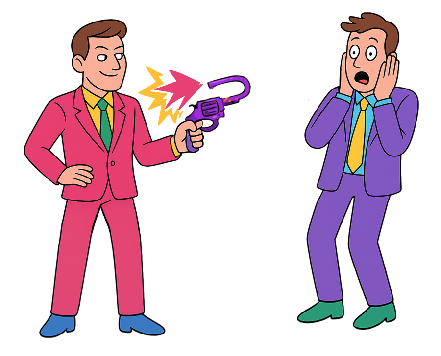
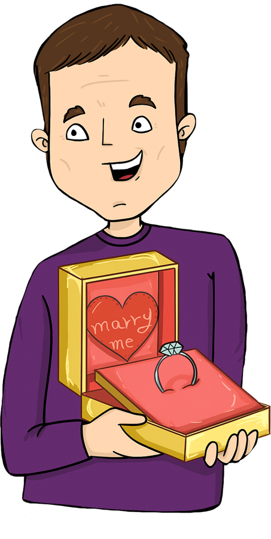
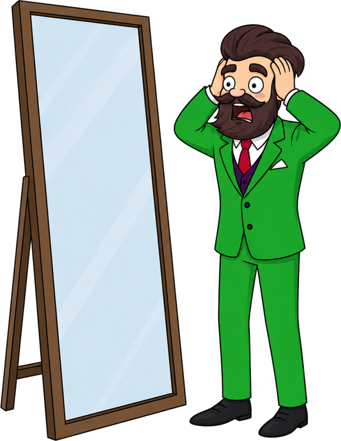
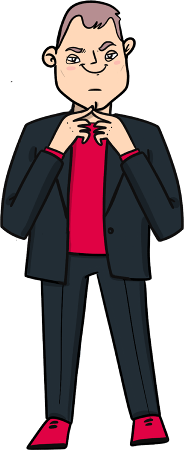
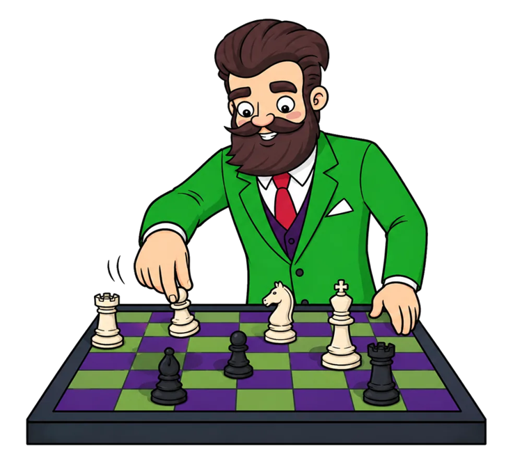
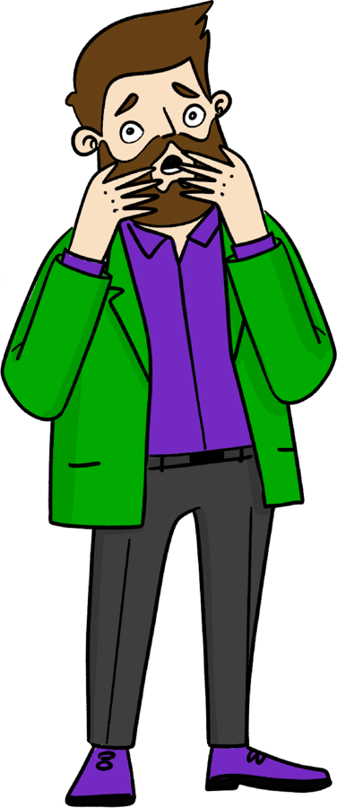
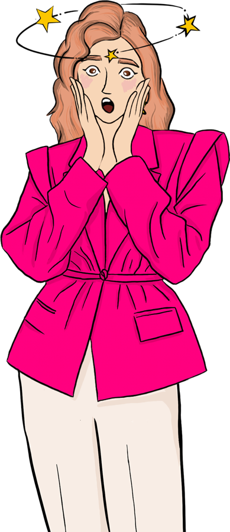
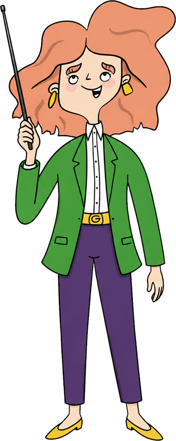

Для начала разберемся, что же такое манипуляция?
Манипуляции бывают осознанными и неосознанными. Не обязательно те, кто манипулируют, – злодеи, желающие вам зла. Это могут быть добрые, любящие вас люди, которые воспринимают такое поведение как норму (потому что так делают многие в их окружении).
Вроде бы ничего плохого ваш оппонент не делал, не кричал на вас, не угрожал, руки не выкручивал, и обвинить-то его не в чем, а вам плохо по результатам такой коммуникации.
Представьте, что вы – стилист и ведете блог, где делитесь модными трендами, даете рекомендации, разбираете разные ситуации. Однажды вам прилетает комментарий:
– Ничего не понятно. Можно на конкретном примере объяснить? Я купила длинную серую юбку, с чем я могу ее сочетать?
Хоть автор и запрашивает вашей помощи как эксперта, но делает это через манипуляцию. Чтобы получить от вас результат, он обвиняет вас в том, что вы непонятно объясняете.
Да, например:
Если вы понимаете, что манипулятор вынуждает вас делать то, чего вы не хотели делать, остановитесь и не дайте собой управлять.
Знаете ли вы, что бегство – лучшая из стратагем?
Ваш собеседник расставляет капкан и ждет вашей реакции.
– вы попались в ловушку, значит, все идет, как задумано!
– это сюрприз для него, план не сработал. Вы ничего не потеряли.
Мне его рассказала подписчица, директор мясоперерабатывающего завода.
Раньше сотрудников так и тянуло «устроить скандал» на совещании с целью отвлечь от настоящего косяка и его исправления (т. е. от решения проблемы; искали, на кого бы свалить вину, которую я, собственно говоря, и не искала).
Лечение было долгим, но результативным.
Стала уходить с совещания. Просто вдруг встала и ушла. Они в это время орут, орут, а потом замечают, что меня нет.
Выходят, спрашивают секретаря: «А где директор?»
А она им: «А вон она сидит на диванчике, чай пьёт».
Так и совмещала совещания с чаепитием. Пояснила, что, когда проорутся, пусть меня позовут.
А орать-то в кабинете директора без его присутствия вроде как некомфортно и не столь эффектно. Так и сошли на нет крикливые совещания.
Что делать с привитым с детства убеждением, что бегство = позор?
И в каких ситуациях лучше всего подходит эта техника?
Мы разберемся с этими вопросами в уроках курса, а перед тем, как начнем знакомиться с техниками реагирования на манипуляции, мы с вами разберем кейс, чтобы понять, как вы действуете в ситуациях, когда вами пытаются манипулировать.
Представьте, что вы – бизнес-тренер. Вам звонит потенциальный клиент – хочет заказать тренинг для компании. А чтобы руководство могло принять решение, предлагает приехать на предприятие (оно находится далеко за городом) и провести демо-тренинг на пару часов бесплатно. На ваш отказ заказчик возмущается:
— Вы же профессионал, как вы можете допустить, чтобы мы покупали «кота в мешке»?

В каких ситуациях на манипуляцию стоит реагировать, а когда нет?
Если вы чувствуете, что сказанное вами только ухудшит ваше положение, то лучше промолчать и уйти от разговора.
Если у вас есть предположение, что вы знаете, как развернуть ситуацию в свою пользу, – действуйте!
– Ты опоздал на 2 минуты!
Анатолий Карпов приезжает на остров Свети-Стефан, чтобы тайно встретиться с американским шахматистом Бобби Фишером – предыдущим чемпионом мира по шахматам, который отказался от игры с Карповым.
Из-за ультиматума Фишера Карпов оказался единственным в истории чемпионом мира, который не только получил звание, не играя в матче или турнире на первенство мира, но и вообще не сыграл с предыдущим чемпионом ни одной партии.
Карпов очень не хочет быть «бумажным чемпионом» и очень надеется уговорить Фишера сыграть с ним.
Бобби начинает встречу с манипуляции. Понимаете, зачем?
Он отдает победу в этой борьбе собеседнику, не проигрывая её.
Так он и сохраняет возможность комфортного диалога и не уходит в позицию «снизу» – позицию нуждающегося.
Карпов понимает, что его собеседник и так все понял, вступать в борьбу и что-то доказывать совершенно не нужно.
Чтобы показать это, герой просто улыбается. Эта улыбка демонстрирует, что манипуляция не удалась, и обе стороны это понимают, и вместе с тем – улыбка добродушная, у Карпова нет желания унизить Фишера и показать свое превосходство.
Предлагает просто оставить попытку манипуляции в прошлом и идти в дальнейший диалог дальше со взаимным уважением.
И это прекрасный способ реакции на манипуляцию, особенно, когда вам важен этот собеседник и вы не хотите упустить возможности, которые открывает взаимодействие с ним.
Вы можете согласиться с тем, что вам нравится в словах собеседника.
А то, что не нравится, – гиперболизировать, довести до абсурда так, чтобы стала понятна беспочвенность требований или претензий манипулятора.
Ксения Собчак на очередную претензию о том, как не стыдно культурному человеку быть ведущим такой передачи, как «Дом-2», ответила, что нет, не стыдно и уточнила:
— Какой такой? Вы говорите так, как будто это вселенская дыра зла, куда затягивают души невинных младенцев!
Представьте, что вы – бизнес-тренер. Вам звонит потенциальный клиент – хочет заказать тренинг для компании. А чтобы руководство могло принять решение, предлагает приехать на предприятие (оно находится далеко за городом) и провести демо-тренинг на пару часов бесплатно. На ваш отказ заказчик возмущается:
— Вы же профессионал, как вы можете допустить, чтобы мы покупали «кота в мешке»?
Конечно же, со своим профессионализмом (многие почему-то стесняются это сделать).
Необходимость проводить компаниям бесплатные демо-тренинги.
Слишком резкое прерывание манипуляции, разговор на этом может быть закончен.
Доведение до абсурда сопровождается вызовом, на который собеседник может ответить: «Да, все, кто нам нужны, приезжают». И что дальше делать?
Здесь есть доведение идеи до абсурда, профессионализм подтверждается не напрямую, а косвенно, через вопрос, который может задать исключительно профессионал.
Если добавить название компании, с которой уже работали и которая значима для заказчика, вопрос с демо-сессией может отпасть сам собой.
Представьте, что вы на совещании, ваш коллега предлагает скопировать идею у конкурентов и рассказывает, как это можно сделать. Вы хорошо понимаете репутационные риски подобного поступка, не выдерживаете и заявляете, что у вас есть другой план.
Руководитель:
— Больше не прерывайте коллег, это грубо!
Почему нам так сложно не реагировать на манипуляции?
Манипуляторы задевают нас за живое, вызывают бурю эмоций.
И создается впечатление, что если не ответить, то мы как бы подтвердим слова манипулятора.
На самом деле нет.
Когда мы живо реагируем на манипуляцию – это знак, что нас задело, что мы сами в себе не до конца уверены.
Самые лучшие учителя – дети, а оружие – их непосредственность.
Эту непосредственность мы прячем за маской серьезности, у нас появляется слишком много стандартов, которым мы должны «соответствовать».
В сериале «Менталист» главный герой Патрик Джейн, психолог и менталист, сотрудничает со следствием в поимке серийного убийцы. «Кровавый Джон» убил жену и дочь Патрика. Трагедия изменила Патрика – ему теперь все равно, кто что ему скажет и о нем подумает. В общении с другими людьми он похож на маленького ребенка с широко раскрытыми глазами на мир – никто не может перед ним устоять.
— Патрик, мне нужна правда!
— Правда?.. Ммм, Дарт Вейдер отец Люка!
— Ваше стремление брать верх над людьми, потребность быть умнее ближнего… не будут давать вам покоя.
— Значит, буду жить беспокойно… оставаясь умнее ближнего.
— Обольщение — не мой конёк.
— Обольстить легко, если знаешь основные правила. Ничего более.
— Неужели? Что-то я не вижу, чтобы за тобой толпой бегали женщины.
— А зачем мне, чтобы за мной толпой бегали женщины?
Посмотрите, как Патрик реагирует в ситуации, подобной нашему кейсу.
– Больше не прерывайте коллег, это грубо!
Вместо того, чтобы спорить с руководителем, отстаивая свою точку зрения, или безропотно согласиться, он вступает в диалог, пытаясь больше разобраться в ситуации.
– Больше не прерывайте допросы коллег – это грубо.
– Это правило?
– Совет.
– Ага. Я его учту!
– Это всё.
– Туфли – просто шик!
Так можно понять на эмоциях высказывается руководитель или, действительно, у него есть к вам претензия.
Благодаря диалогу Патрик понимает, что руководитель не вводит строгое правило, которое нужно неукоснительно соблюдать, а дает совет, который, в случае острой необходимости, он сможет не брать во внимание.
А чтобы сгладить градус напряженности беседы, Патрик в финале делает руководительнице комплимент.
Суперпример, как благодаря вопросам и живому диалогу вы можете реализовать свою цель и не ухудшить отношения с собеседником.
Юлия – начальник отдела в крупной компании, на хорошему счету у руководства и, когда появляется свободная вакансия заместителя директора, ее рассматривают как основного кандидата на это место.
Однако Анна, которая пришла в компанию недавно, но уже успела себя зарекомендовать, тоже рассчитывает получить эту должность и старается использовать любую ситуацию, чтобы выставить себя в выгодном свете и принизить Юлию.
Так, перед планеркой, пока вся команда собиралась в переговорке, Юлия распечатывала на компьютере секретаря документ, который директор от нее очень ждал. С принтером что-то пошло не так, бумагу зажевало, подбежала Анна:
– Давай я помогу!
Юлия замешкалась, Анна схватила распечатанный документ и побежала навстречу к входящему в переговорку директору со словами:
– Вот, помогла Юлии с документом, все готово!

Промолчать в ответ на манипуляцию можно от слабости – когда ты растерялся и не знаешь, что ответить.
Или от силы – когда ты, как огромный океан, который невозможно испортить ядом маленькой рыбы.
Однажды старый учитель — мастер меча – сидел и пил чай, а рядом выполнял работу по дому его ученик. И вдруг в дом ворвался самурай, который хотел вызвать на поединок мастера меча, оскорбляя его, чтобы спровоцировать на бой. Самурай продолжал говорить нелицеприятные слова, а мастер меча — пить чай.
Когда самурай истощил запас ругательств и ушел, потому как поводов достать меч не было, потрясенный ученик спросил у учителя, почему тот промолчал?
На что мастер ответил:
— Скажи мне, если к тебе приходит человек и приносит дар, который тебе не нужен, и ты его не берешь, кому останется дар?
Ученик ответил:
— Тому, кто дарил.
Все это вы делаете «с подарком» в руках. Вы его взяли и пытаетесь что-то с этой неприятностью сделать, как-то минимизировать вред.
Представьте, что близкий родственник часто старается обесценить ваши слова, сказать что-то хлесткое, чтобы вы оправдывались. В этот раз он кинул: «Сколько учишься всему, а толку все нет!» А когда вы промолчали в ответ, не выдержал:
— Ну, что молчишь, а?
Заметили в описании кейса слово «не выдержал»? Оно очень точное. Если вы не реагируете на манипуляцию, молчите, это идет вразрез с планами манипулятора.
Ему не нравится ваше океанское молчание.
Если бы вы ответили – он бы продолжил подтрунивать, а так непонятно, что делать.
Можно продолжить многозначительное молчание, если у вас есть сила на него.
Если нет, то можно «вернуть подарок» с помощью слов: отказаться от навязываемой темы.
— Ну, что молчишь, а?
— Это не та тема, которую я готов обсуждать.
Кстати, так делают звёзды в интервью. Замечали?
В сериале «Американская история ужасов» (сезон «Нежность») главной героиней манипулируют все вокруг.
Казалось бы, Анна – популярная актриса, её номинировали на «Золотой Глобус», силы и уверенности у неё должно хватить на то, чтобы ответить страшным манипуляторам, но…
Каждый раз манипуляторы ставят её в тупик. Например, начинающая, но крайне амбициозная актриса, встретив Анну в фойе, когда та шла побеседовать со своим продюсером, очень дружелюбно поприветствовала ее и восхитилась булочками с кремом, которые несла Анна.
Не спросив разрешения, девушка схватила одну булочку голыми руками, а затем, как бы передумав, с напускным сожалением вернула ее обратно – ведь выпечка с кремом слишком калорийна, актрисе нужно беречь фигуру.
Начинающая актриса вступила в состязание с уже любимой многими звездой. Её задача – показать, что она сильнее, время фурора конкурентки прошло, пора сказать ей «до свидания».
Лишить звезду уверенности в себе и силы безразличия. Когда начинающая актриса забирает булочку из рук звезды, она как бы говорит:
И дальше практически любая реакция Анны играет на руку начинающей актрисе:
Простая, даже забавная, если смотреть со стороны, ситуация, а эмоциональные и репутационные потери звезды – большие.
Начинающая актриса совершила поступок, который влечет за собой определенные последствия, – взяла булочку, которую можно ей вернуть.
То есть, оставить ее один на один с результатом своих действий.
Но бывает так, что вернуть «подарок» не получается по разным причинам. Что делать в этом случае?
Вы понимаете, что человек пытается манипулировать, и понимаете, что он делает это специально. Важно, когда мы делаем манипуляцию очевидной с позиции силы, мы не вступаем в борьбу и ответный негатив.
Более мудрый и опытный собеседник отреагирует на такую манипуляцию, как взрослый человек – на ребенка. Дети часто манипулируют взрослыми, чтобы получить желаемое, потому что они еще не понимают, что делают, и взрослые не злятся на них за это, а реагируют смехом.
Поэтому, чтобы не терять позицию мудрой и опытной звезды, героиня может открыто и по-доброму посмеяться над поступком начинающей актрисы. Тем самым она показывает, что все прекрасно понимает, но для нее это совершенно не угроза, а так – детская шалость.
Юлии, как и героине «Американской истории ужасов», будет выгодно отнестись к действиям Анны, как к манипуляциям ребенка. Наверняка вы бывали в ситуации, когда малыш очень хочет вам помочь и просит нажать на кнопку лифта или кнопку вызова на вашем телефоне, и, когда вы позволяете ему это сделать, испытывает невероятную гордость. А у вас как у взрослого это вызывает широкую улыбку. Желание Анны передать документы директору вместо Юлии очень похоже на такую детскую реакцию.
Юлия, которая выглядит спокойно и уверенно, а не тревожно или разозленно, меньше всего будет восприниматься как человек, который нуждался в помощи и был спасен благородной Анной.
Поэтому, если Юлия просто посмеется в ответ на слова Анны, директор и остальные присутствующие поймут, что что-то здесь не так и не стоит воспринимать слова Анны буквально.
Мы привыкаем к привычным шаблонам поведения, нам кажется, что всё и всегда мы делаем правильно, а если что-то не получилось, то не мы виноваты, а собеседник сорта «редис» попался.
А новые подходы кажутся спорными и «сработают ли»? Я лучше буду делать, как привык.

Итак, что же не так могло быть с вашими ответами?
Когда вы придумывали ответы на предыдущие кейсы, вам он казался отличным.
А сейчас вы нашли в нем изъяны.
При этом ответ не изменился, изменилось ваше отношение к нему.
Кстати, также можно найти изъяны в любой предлагаемой в этом обучении технике.
Есть способы реагирования, которые с большей вероятностью приведут вас к успеху (они собраны на курсе), и есть те, которые приведут с меньшей вероятностью.
Итак, каждая фраза может иметь двойной смысл как позитивный, так и негативный. Давайте учиться этот факт использовать в свою пользу.
Находить в словах собеседника, чтобы он ни делал, позитивное намерение и реагировать на него.
— Больше не прерывайте коллег, это грубо!
Можно ответить с акцентом на негативное намерение, попытку вас упрекнуть. Акцент на негативном намерении усилить повторением слова «грубо»:
— Грубо? А воровать идеи не грубо???
И разжечь конфликт.
А можно с акцентом на позитивном намерении шефа провести конструктивное совещание, услышать разные мнения.
В такой ситуации мы не зацикливаемся на слове «грубо», воспринимаем его как неудачно подобранное и не используем сами в своем ответе:
— Давайте тогда установим порядок обсуждения? Чтобы все было комфортно.
Первая часть фразы показывает, что вы разглядели позитивное намерение руководителя, — и вносите конструктивное предложение.
Вторая часть фразы помогает вам отстоять свои интересы и спокойно донести свою позицию: «Вы хотите, чтобы всем, в том числе и вам, было комфортно», следовательно, вы очень тонко даете понять, что такое высказывание вам некомфортно.
Представьте, что по стечению обстоятельств вы оказались за одним столом с людьми, каждый из которых многократно богаче вас.
Вы рассказали, чем вы занимаетесь, и одна дама задает вам вопрос:
– И вы находите ваш образ жизни привлекательным?
От того, как вы воспринимаете вопрос, зависят ваша реакция и то, как повернется диалог дальше.
В «плюс» вам или в «минус».
Вопрос:
Большинство воспринимает, как атаку.
И тогда их ответ выглядит, как оборона или встречное нападение. А диалог превращается в разрушительное сражение.
Джек, главный герой фильма «Титаник», воспринимает этот вопрос как интерес, и с удовольствием рассказывает о том, что же такого привлекательного есть в его жизни.
Молодой менеджер довольно быстро стал набирать вес как хороший торговый представитель в глазах руководства компании. И вот его уже назначили начальником отдела продаж. В его коллективе он чуть ли не самый младший. Большинство воспринимает это назначение случайным. И вот однажды молодой руководитель дает задание своему подчиненному, а тот ему в глаза и говорит:
– А ты кто тут такой, чтобы командовать?
Очень сложно испытать радость, когда на тебя агрессивно нападают.
Скорее всего, вы испытали яркую негативную эмоцию – гнева или возмущения.
А если вы не привыкли к такому отношению к себе, то вас охватил страх: «Что же делать?»
Если одна из этих негативных эмоций захватила вас, то вы совершите самую распространенную ошибку в этой ситуации.
— Я твой начальник.
— Меня назначили.
— Тот, от кого зависит твоя премия.
И так далее.
Просто представьте, что будет после угрозы, какой имидж заработает новый начальник в компании?
В книге Льюиса Кэрролла «Алиса в Стране чудес» юная Алиса встречает загадочную Синюю Гусеницу, курящую кальян, и та задает ей вопрос:
— Ты кто такая?
Алиса отвечает:
— Сейчас, право, не знаю, сударыня. Я знаю, кем я была сегодня утром, когда проснулась, но с тех пор я уже несколько раз менялась.
— А ты кто тут такой, чтобы командовать?
— Интересно 😃 До этого вопроса я был твоим руководителем, а теперь что-то изменилось?
Чтобы так ответить, нужно поймать интерес к происходящему. Вместо того, чтобы защищаться и отбиваться от нападок, сделать шаг навстречу, чтобы разобраться в ситуации.
А чтобы усилить свою позицию, можно показать, кто начальник отдела не на словах, а на деле.
Вместо того, чтобы спорить и что-то доказывать манипулятору, на конкретном примере можно продемонстрировать, что его слова неверны.
— А ты кто тут такой, чтобы командовать?
— Есть сложности с заданием?
Кто может задать вопрос про сложность задания? Руководитель.
Начальник отдела не оправдывается, не объясняется и не угрожает. Он ведет диалог с подчиненным из роли руководителя.
И последовательно разрешит ситуацию: сначала выяснит причину негативного поведения, устранит ее, потом поработает над формой обращения.
Представьте, что ваша любимая супруга предлагает дальнюю поездку на автомобиле с детьми – прогуляться. На поездку уйдет часа четыре. Вам было бы гораздо комфортнее побыть дома в выходной, поваляться под пледом, посмотреть сериал. Но в последнее время вы так часто отказывали куда-то сходить вместе, что вам уже неудобно – это же просто просьба, можно же и уступить любимому человеку? Да и детям нужно гулять.
А кроме лени, других причин не ехать у вас нет.

Начнем урок с Парадокса Абилина, описанного специалистом по науке управления Джерри Харви.
В один жаркий техасский вечер некая семья играла в домино на крыльце до тех пор, пока тесть не предложил съездить в Абилин отобедать.
Жена сказала: «Звучит неплохо».
Муж, несмотря на то, что поездка обещала быть долгой и жаркой, подумал, что надо бы подстроиться под других, и произнес: «По-моему, неплохо, надеюсь, что и твоя мама не откажется».
Тёща же ответила: «Конечно, поехали! Я не была в Абилине уже давно».
Дорога была жаркой, пыльной и долгой. Когда же они наконец приехали в кафетерий, еда оказалась невкусной. Спустя четыре часа они, измученные, вернулись домой.
Один из них произнёс неискренне: «Верно, неплохая была поездка?»
Тёща на это сказала, что на самом деле она бы лучше осталась дома, но поехала, раз уж остальные трое были полны энтузиазма.
Муж сказал: «Я был бы рад никуда не ездить, поехал лишь, чтобы доставить остальным удовольствие».
Жена произнесла: «А я поехала, рассчитывая на радость остальных. Надо было быть сумасшедшим, чтобы добровольно отправиться в эту поездку».
Тесть ответил, что он предложил это лишь потому, что ему показалось, что остальным скучно.
И они сидели, ошеломлённые тем, что поехали в поездку, которой никто из них не хотел. Каждый из них предпочёл бы спокойно наслаждаться тем днём.
Действительно парадокс – действуешь из позитивных намерений, а получается хуже и себе, и другим.
Никто не знает, насколько сильно желание жены покататься. Может быть, как в техасском анекдоте, она предложила идею только потому, что подумала, что дома всем может быть скучно.
Но если ответить отказом, то мы можем легко оказаться в ловушке.
Это «нет» может стать последней каплей в череде отказов и взорвать идиллию вашего дома. И неважно уже будет, что изначально никто сильно ехать и не хотел – дело принципа.
Воспользоваться игрой в превосходство – демонстративно отдать право решить, как лучше сделать другому человеку, предварительно рассказав о своем отношении к идее. Здесь потребуется быть максимально корректным.
Вполне возможно, что они тоже не хотят ехать и ссора по поводу того, ехать или нет, была бы совершенно бессмысленной.
В кафе розовощекая девушка моргает огромными глазами и выслушивает ненавидящий шепот мужчины-руководителя:
– Это вы обязаны были сделать!
Вы меня подставили!
Разве я этого не говорил?
Если бы вы меня слушали!
Я теряю на вас время!
В глазах девушки появляются слезы, мужчина кидает:
– Я не хочу с вами разговаривать, у вас истерика! Даю вам пару минут, чтобы успокоились!

Давайте сначала поговорим об эмоциях.
— Сегодня важный для меня собеседник опаздывал на встречу на 20 минут, причем в первые 10-15 мин. даже не было сообщения о том, что он опаздывает. Я начинала раздражаться, нарастало возмущение и, о чудо, я вспомнила, что в телефоне под рукой урок, где мы разбирали эту ситуацию! Попробовала вспомнить суть и прием, но в эмоциях не смогла, открыла урок, прочитала, затем сразу применила на практике. Класс!!! Ощущение пользы офигенное!
В ситуации с руководителем эмоции девушки играют на руку манипулятору, как бы подтверждают его слова об ее несостоятельности.
Выслушивая и расстраиваясь от слов манипулятора, девушка играет по его правилам.
И, даже если она возмутится и перейдет в нападение, это для него тоже ожидаемо! Так легко будет выставить ее истеричкой, которой управляют эмоции.
Хороший ход, только слово «истеричка» смущает. Собеседник может его подхватить, а потом сказать, что это вы сами так себя назвали, не он первый.
В этом практически нейтральном ответе есть загадка. Скорее всего, собеседник спросит: «И для чего же?» Тогда вы можете поговорить о том, как выглядит эта ситуация со стороны.
Здесь большой вызов для оппонента, он может быть им воспринят агрессивно.
Представьте, что вы ведете бизнес-блог в соцсетях, где продаете свои услуги. Вам в личные сообщения пишет неизвестная вам дама – коллега по сфере деятельности. Восхищается вашими талантами, интересуется вашими предложениями как потенциальный клиент и, как бы между прочим, заявляет:
– Кстати, ваш smm-специалист скопировал вашу шапку* с моего сайта!
* Шапка – это краткое описание автора блога на личной странице, там указывается, чем автор занимается, например: Вероника Иванова сертифицированный коуч АСС ICF разработчик игр
Что делать, если тебя обвиняют в воровстве?
– Моральное пятно, которое норовят на нас поставить, необходимо не уменьшать в размерах своими объяснениями и оправданиями, а просто переместить на оппонента. Этический упрек снимается только встречным этическим упреком за этот упрек.
Владимир Тарасов «Русские уроки японских коанов».
То есть, если вам бросают обвинение в воровстве, вы должны ответить встречным упреком о том, что такое поведение в отношении вас неприемлемо.
Но тут есть нюансы.
– Кстати, ваш smm-специалист скопировал вашу шапку* с моего сайта!
вы возмутились и ответили:
– Как вы смеете обвинять меня в воровстве!
Что вы её неправильно поняли, что она говорит не о вас, а о smm-специалисте, что она не утверждает, а спрашивает, и так далее.
В итоге вы можете оказаться в роли человека, которому мерещится, что все вокруг враги и хотят на него напасть. И который сам всех без необходимости обвиняет во всех смертных грехах.
Не очень приятная роль.
Поэтому, если уж вы вступили в диалог, а не проигнорировали неизвестного вам человека, то используйте технику «Глупый вопрос».
Мы стесняемся показаться глупыми в серьезных разговорах, а зря.
И кто тогда глуп?
Вспомните разговор ребенка и взрослого дяди, который, услышав глупый вопрос, теряется и не знает, что ответить. Ребенок им управляет.
Чтобы прояснить ситуацию, дать дорогу к жизни собеседнику.
Если после глупого вопроса собеседник поправит свою фразу, сформулирует ее корректно, то и конфликта не будет.
А если прозвучит конкретное обвинение – тогда можно воспользоваться подсказкой Тарасова.
– Кстати, ваш smm-специалист скопировал вашу шапку с моего сайта!
– Какую шапку?
Вопрос должен быть таким, как будто вас разбудили среди ночи и вы ничего не понимаете, что происходит и чего от вас хотят.
Из серии «Кто здесь?»
В фильме «Чемпион мира» претендент на звание чемпиона Корчной обзывает действующего чемпиона мира по шахматам – молодого Карпова, гаденышем.
Прямое оскорбление да еще и прямо во время турнира!
Что делает Карпов?
Задает глупый вопрос:
– Что с вами?
Ведь все же понятно: Корчной нападает на Карпова, намеренно вызывает его на конфликт. Но Карпов делает вид, что не понимает, о чем речь. Его вопрос звучит удивленно, в голосе нет сарказма. Такая реакция на хамство – то, как действует Карпов – дает ему возможность и не уйти в грызню, и в то же время не потерять лицо.
Странных людей много, а вы один, со всеми разбираться – энергии не хватит.
«Отпускайте идиотов и клоунов из своей жизни. Цирк должен гастролировать» Фаина Раневская.
В компании, где работает Иван, проводится тимбилдинг с тренером в виде командных игр. Тренер поставил Ивана в пару с Петром, который давно демонстрирует свою неприязнь к Ивану – подшучивает над ним, иногда даже оскорбляет. Началась игра, и Петр снова отпустил издевательскую шутку в адрес Ивана, после которой Иван отказался быть с ним паре.
Оценив ситуацию, тренер решительно заявляет Ивану:
– Вы должны уметь работать в команде, даже если вам кто-то не нравится!

Попадали ли вы в ситуацию, когда вам предъявляют ультиматум?
А зачем выбирать из двух альтернатив, каждая из которых тебя не устраивает?
Как? Как это сделал заяц в анекдоте.
Идёт лев по лесу, навстречу ему лиса.
— Ты кто?
— Я лиса.
— Записываю: лиса. Придёшь ко мне завтра утром, я тебя съем на завтрак.
Лиса заплакала.
Идёт лев дальше, навстречу ему медведь.
— Ты кто?
— Я медведь.
— Записываю: медведь. Придёшь ко мне завтра днём, я тебя съем на обед.
Медведь заплакал.
Идёт лев дальше, навстречу ему заяц.
— Ты кто?
— Я заяц.
— Записываю: заяц. Придёшь ко мне завтра вечером, я съем тебя на ужин!
— А можно не приходить?
— Можно. Вычёркиваю…
Все слова мы воспринимаем на веру. Сказали прийти на завтрак – значит, нужно идти, иначе случится что-то более страшное.
Сказали выбирать из двух вариантов – значит, нужно выбрать. Или нет?..
Мария встречалась с Иваном три года и уже думала, что не дождётся предложения руки и сердца. Однако оно было сделано, и счастливая невеста вместе с женихом занялась организацией свадьбы. После подачи заявления в ЗАГС Иван принёс Марии платье, в котором выходила замуж его мама, и предложил надеть его в день свадьбы. Платье по размеру подошло, но совершенно не понравилось Марии по фасону, и она ответила отказом, после чего Иван заявил:
— Или ты наденешь это платье, или свадьбы не будет!
Предлагаю выйти из ловушки двух альтернатив и расширить перечень вариантов. Для начала хотя бы до трех, а дальше можно и больше вариантов обнаружить.
Только есть один важный нюанс – новые альтернативы должны искать не вы, а ваш собеседник. И ваша задача – подтолкнуть его к тому, чтобы он сам начал думать о других вариантах развития событий и предлагать их вам. Например:
— Или ты наденешь это платье, или свадьбы не будет!
— А какие есть еще варианты? Эти два меня не устраивают.
Еще один важный момент: многие люди, получив ультиматум, эмоционально принимают категоричное решение прервать отношения с таким человеком. Но это может лишать их желанных и даже редких возможностей, от которых не обязательно отказываться, если знаешь, как реагировать в такой ситуации.
В компании, где работает Иван, проводится тимбилдинг с тренером в виде командных игр. Тренер поставил Ивана в пару с Петром, который давно демонстрирует свою неприязнь к Ивану: подшучивает над ним, иногда даже оскорбляет. Началась игра, и Петр снова отпустил издевательскую шутку в адрес Ивана, после которой Иван отказался быть с ним в паре.
Оценив ситуацию, тренер решительно заявляет Ивану:
– Вы должны уметь работать в команде, даже если вам кто-то не нравится!
Часто люди заявляют в ультимативной форме то, что ультиматумом не является.
Подумайте, действительно ли тренер будет насильно заставлять вас делать то, что вам не хочется?
Конечно же, нет.
Это фраза-слоган, которая произнесена практически на автомате, тренер особо не разбирался в вопросе.
Здесь подойдут любые вопросы без негатива, отвечая на которые, тренер расскажет вам о других возможностях.
– Должны?
– А какие еще варианты прохождения игры у вас есть?
– Мне важно, чтобы решение ситуации устраивало и меня, и вас как тренера. Какие варианты для продолжения игры у нас еще есть?
– Да, мы с Петром обязательно пообщаемся после тренинга, есть что обсудить. А пока какой еще вариант прохождения игры у нас есть?
Как бы не прошли переговоры с тренером, ситуацию с неприятельски настроенным Петром Ивану в любом случае нужно решать.
Можно договориться поговорить после тренинга.
Если же тренер будет настаивать на дальнейшей совместной работе, значит, взять паузу и предложить Петру обсудить ситуацию до продолжения работы.
Представьте, что ваш постоянный клиент пишет вам личное сообщение и просит сделать приличную скидку на товар, аргументируя это тем, что вы и так неплохо заработаете. На ваш ответ, что у вас единая ценовая политика, спецусловия бывают при выходе новых продуктов и объявляются для всех клиентов, иначе это будет несправедливо по отношению к тем, кто покупает по цене сайта, постоянный клиент заявляет:
— А я никому не расскажу!
Мне очень нравится термин «соломенные человечки».
Так называются логические ловушки, в которые нас пытаются поймать манипуляторы.
Представьте, что ваш постоянный клиент пишет вам личное сообщение и просит сделать приличную скидку на товар, аргументируя это тем, что вы и так неплохо заработаете. На ваш ответ, что у вас единая ценовая политика, спецусловия бывают при выходе новых продуктов и объявляются для всех клиентов, иначе это будет несправедливо по отношению к тем, кто покупает по цене сайта, постоянный клиент заявляет:
— А я никому не расскажу!
вы не делаете ни для кого индивидуальных условий – такая политика работы с клиентами.
которым заменяет вашу позицию оппонент, – вы не делаете скидку, потому что боитесь, что кто-то об этом узнает.
И манипулятор легко побеждает соломенное чучело – он никому не расскажет, все ок!
Подняться выше над схваткой. Увидеть, какую грандиозную работу манипулятор проделал, и сделать ему комплимент.
Только без тени издевки, пожалуйста.
— А я никому не расскажу!
— Я всегда поражаюсь вашим переговорным способностям: вы так ловко расставляете ловушки! Если бы была возможность сделать скидку, я бы точно не устояла!
Или, действительно, сделали бы скидку просто так.

Иногда количество обвинений или аргументов против нас так велико, что обработать эту лавину ударов не представляется возможным.
Как в винегрете перемешаны практически все овощи, так и оппонент смешивает все претензии в одну кучу и вываливает их на вас.
Точно не нужно пытаться ответить на каждое обвинение по отдельности. В таком случае собеседник не остановит поток нападок и вы потеряете контроль за ситуацией.
Во время обсуждения нового проекта руководитель выбрал куратором Анну, которая хорошо показала себя в работе с похожим проектом в прошлом году. Ей в помощь назначили Сергея, основной задачей которого была работа с документацией.
На что Сергей заявил:
– Копаться в бумагах – это секретарская работа, а я — профессиональный маркетолог, вы не имеете права заставлять меня делать это. И вообще, почему компания не наймет стажеров для таких задач? Вы как руководитель должны заботиться о развитии компетенций сотрудников, а у нас мало того, что тренингов уже полгода не было, так еще и это. Где же ваши лозунги о том, что каждый в команде может проявить свои таланты?
Игнорировать эту ситуацию крайне сложно. Слишком агрессивная реакция, хороший руководитель должен понять ее истинную причину, чтобы быть уверенным, что в общей атмосфере компании этот инцидент ничем не угрожает.
Разговор предпочтительно провести лично. Вопрос, который призван помочь прояснить ситуацию, может звучать так:
— Что вас заставило так отреагировать?
или
— Для чего вы все это сейчас говорите?
или
— Давайте начистоту. Что вас привело на тропу войны?
Задача руководителя – разобраться, что скрывается за воинствующим поведением подчиненного. А уже после – принять управленческое решение.
Перечислите как можно больше аргументов разной силы и значимости, добавьте эмоций.
В такой ситуации собеседник поймет, что проще согласиться, чем ответить на каждый довод.
Техника винегрета часто используется в семейных парах более эмоциональным супругом.
Еще очень круто техника работает, если вам аккуратно нужно выяснить какие-то подробности у человека, которого вы по какой-то причине не хотите спрашивать о них прямо. Например, вы еще не достаточно близко знакомы для этих вопросов.
Рассказывая множество подробностей о себе и обстановке, мы можем расположить к себе собеседника своей открытостью. Затем можно аккуратно добавить вопросы, которые помогут вам прояснить картину.
Еще один прием, который удачно сочетается с техникой винегрета, — бить палкой по траве — тринадцатая китайская классическая стратагема.
Стратагема — это заранее продуманная последовательность действий, направленная на достижение своей цели в сложной ситуации, в которой мы оказались.
Если мы подозреваем, что в траве притаилась змея, можно ударить палкой, чтобы вспугнуть змею и очистить себе путь без риска быть укушенным.
В диалоге мы «бьем палкой по траве» с помощью наводящих вопросов, и, когда они подмешаны в «винегрет», собеседник легче на них отвечает.
Представьте, что вы хозяин точки, которая торгует кофе навынос. Вы пришли проверить работу точки и, находясь у стойки, стали свидетелем диалога.
— Почему у вас кофе по 400 рублей, а у всех по 250?
— Ну, потому что у нас очень хороший кофе, – замялся бариста.
— А я думаю, что кофе у всех одинаковый! – заявила дама.
Замечали, что попытки образумить, объяснить, дать понять, в чем собеседник не прав, ничем хорошим не заканчиваются?
А это одна из главных техник, которые мы используем в сложных ситуациях.
Чем больше мы объясняем, тем больше желание с нами спорить и показывать, что объяснения не принимаются!
Любые объяснения будут натыкаться на скепсис и обесценивание.
Вдруг в диалог вступил третий участник. Всё это время он находился у стойки и общался с бариста.
— Давайте я объясню, почему за этот кофе стоит заплатить 400 рублей, – он подмигнул сотруднику с видом «смотри и учись, как нужно продавать».
— Ну, давайте… Но с какой стати вы будете мне рассказывать?
— Я хозяин этой точки. Посмотрите на стаканы! Везде вам выдадут просто пластик, а здесь – еще и подставку, чтобы вам не было горячо. Взгляните на крышечки: они, как в МакДоналдсе, с удобным отверстием для питья и защитой от протекания. Все это стоит дорого!
Дама не впечатлилась.
— Интересное кино! Я хочу платить не за стакан, а за кофе! Потому что стакан я не пью, а выбрасываю!
— Дело не только в стаканах. Мы используем ультрапастеризованное молоко и очень хороший кофе, а у других молоко обычное! Вот скажите, вы хотите заплатить 400 рублей и получить удовольствие или просто купить кофе за 250 рублей?
— Конечно, купить кофе за 250 рублей, – не унималась женщина.
Кажется, такого развития событий владелец точки не ожидал.
— Хорошо, я угощу вас кофе, чтобы вы сами оценили разницу, – он сдался и попросил бариста: «Сделай для дамы капучино с миндальным молоком!»
— Хм, ну ладно, – настроение у женщины резко улучшилось. Ведь она только что сорвала джекпот. – Как раз в машину спешу, меня ждёт ребёнок.
— Вот и проверите, как удобно пить кофе из наших стаканов.
— Проверю-проверю, вернусь и поделюсь впечатлениями, – ответила довольная дама и убежала.
Вместо объяснений отлично работает тизер – интригующая фраза.
И тут фантазия оппонента объясняет собеседнику все за вас. И делает это зачастую так эффективно, что прием срабатывает!
— Почему у вас кофе по 400 рублей, а у всех по 250?
— Ну, потому что у нас очень хороший кофе, – замялся бариста.
— А я думаю, что кофе у всех одинаковый! – заявила дама.
— А вы попробуйте и узнаете – с загадочной улыбкой подключается хозяин точки.
Или «Есть секрет. Пока не попробуешь – невозможно понять».
Или «Многие так сначала говорят».
Здесь главное и дальше придерживаться выбранной стратегии и не пытаться оправдываться и объясняться.
Будет пробовать – узнает секрет. Не попробует – не узнает и будет потом терзаться, а что же она не узнала?
Оно может привести к продаже с гораздо большей вероятностью, чем любые объяснения, которые не увеличивают ценность продукта, а только обесценивают его.
Если дама решится и попробует – то сработает «Стокгольмский синдром покупателя», и она найдет объяснение, почему она заплатила деньги.
Знаете ли вы, что если кто-то заплатил большую сумму денег за покупку, то он будет искать рациональные аргументы и всячески убеждать себя и окружающих, что покупка стоила того, даже если окружение неоднозначно даст ему понять, что он совершил большую глупость.
Наблюдала на днях, как опытная руководительница под воздействием «Стокгольмского синдрома» защищала проект, который наносит непоправимый ущерб её репутации. Только потому, что когда-то приняла решение в нем участвовать.
Итак, синдром работает после покупки. А можно ли его использовать, чтобы покупку стимулировать?
У Стокгольмского синдрома два важных компонента, приводящих к результату: Осознанное решение + Большие затраты = Оправдание покупки. Где нам раздобыть эти компоненты до покупки?
Если потенциальный клиент к нам обратился, он тоже принял решение, ведь он мог пойти в другую компанию, но начал диалог именно с нами.
Да, он не потратил еще ни копейки на покупку. Но мы можем обнаружить, что до принятия решения прийти к нам он потратил огромное количество:
И если вы ведете с ним разговор, как с человеком, который решился к вам обратиться и понес большие затраты, чтобы сделать этот шаг, тогда шансы, что он уйдет, купив, значительно увеличатся.
Ведь не зря же все это было?!
Представьте, что вы встречаетесь с коллегой, чтобы поработать над проектом. Заварили кофе, поговорили немного о последних новостях, и коллега к чему-то упомянул Василия, у которого не так давно был с вами конфликт:
— Ты не представляешь, какие слухи он про тебя распускает!
Мы говорили о том, что в большинстве ситуаций игнорирование является лучшей формой реагирования на манипуляции.
Но бывает так, что молчание воспринимается как знак согласия и собеседник выплескивает на вас совершенно ненужную вам информацию, которую потом приходится как-то обрабатывать.
Чтобы продолжить разговор и не стать жертвой манипулятора, можно использовать фрейм (рамку), важный для людей бизнеса – фрейм времени.
Если вам не нравится, как разворачиваются события – лучше прервать их развитие, предложив сэкономить время:
— Давайте не будем это обсуждать, кучу времени потратим зазря.
— Время уходит, а мы к главному вопросу не перешли.
— Это уже в прошлом, давайте перейдем к настоящему, не будем время терять.
И тому подобное.
Любопытно узнать, что же там говорит этот нахал?
Если вы заинтересуетесь, что же там про вас говорят, и коллега расскажет, дальше придется как-то реагировать, разыграются эмоции, и вы можете сказать что-то, о чем потом пожалеете.
Сила нелюбопытства в том, чтобы проявить неинтерес и прервать разговор тогда, когда манипулятор предполагает, что вы попадетесь в его сети.
— Ты не представляешь, какие слухи он про тебя распускает!
— Что-то мы все обо мне и обо мне, а у нас проект горит!
Не переживайте, что переключение будет слишком явным. Это сигнал от вас, что подобные темы вы не хотите обсуждать.
— Я не хочу обсуждать сплетни обо мне.
На встрече выпускников известного престижного университета один из выпускников не смог похвастаться ни серьезными научными достижениями, ни большими доходами, ни высокой должностью. Его бывший однокурсник, известная персона, приобнял его и покровительственно заметил:
— Ладно, мы поможем тебе выбиться в люди!

В сериале «Триггер» главный герой Артем Стрелецкий, психолог, из-за использования опасного провокативного метода психотерапии попадает в тюрьму (его пациент падает с крыши).
По освобождении из тюрьмы покровительство над психологом берет его друг Денис – помогает с кабинетом, деньгами, связями.
Через какое-то время между друзьями вспыхивает конфликт и в откровенной беседе выясняется, что вся эта помощь нужна прежде всего Денису. В детстве он не был лидером, не был никогда первым, и теперь, во взрослой жизни, он стремится компенсировать переживания детства.
Поведение нашего собеседника может быть обусловлено не нами, а какими-то личными историями, переживаниями.
На встрече выпускников известного престижного университета один из выпускников не смог похвастаться ни серьезными научными достижениями, ни большими доходами, ни высокой должностью. Его бывший однокурсник, известная персона, приобнял его и покровительственно заметил:
— Ладно, мы поможем тебе выбиться в люди!
Почему-то однокурснику важно сказать эту фразу, еще и сделать это при всех. Помощь обычно предлагают не в такой форме и наедине.
Значит, стоит узнать, что скрывается за его поведением, в чем его истинный мотив.
Корректный и в то же время, попадающий в цель вопрос. Поможет, если не обнаружить истинные намерения собеседника, то показать, что о них догадываешься.
Знаменитый «коучинговый» вопрос. Слишком искусственный, чтобы его применять.
Вопрос резкий, может привести к накалу эмоций.
Круто, если вы произносили: «О, это интересно!», пока читали техники «Страшных манипуляторов» и будете их применять на практике